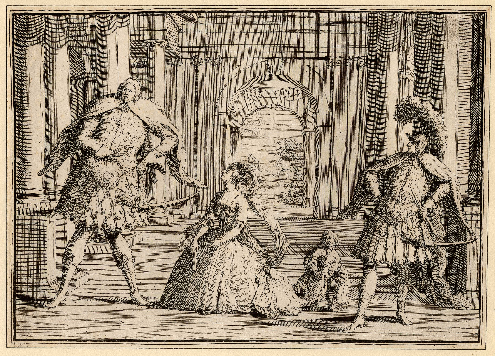
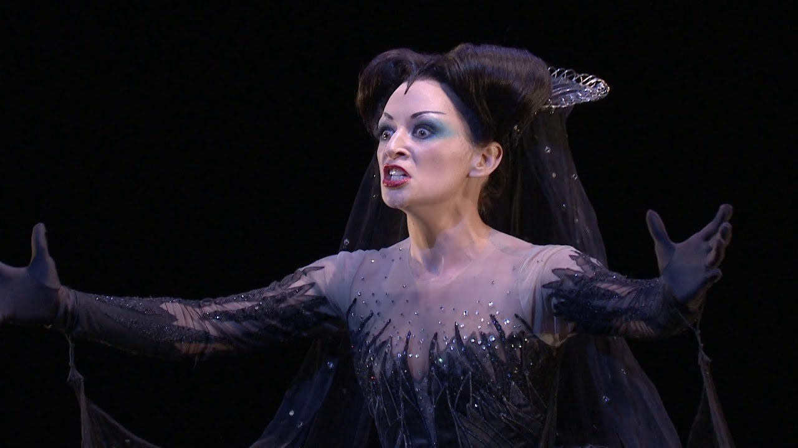

The opera continues to enjoy great success
The most important secular vocal genre of the Classical period remains opera. In contrast to the mythological themes and ornate music of this genre during the Baroque period, the Classical period saw the emergence of new types of opera that sought themes closer to the common people and music that was simpler and more accessible:
- Opera Seria: this is traditional Italian opera, characterised by its solemn, aristocratic and tragic nature. Its plots are based on classical mythology or ancient history. It is written entirely in Italian and sung from start to finish (without spoken dialogue).
- Opera buffa: this is the Italian musical comedy. It has a light-hearted, popular and satirical character. It depicts situations from everyday life featuring ordinary characters (servants, middle-class people). Like opera seria, it is sung entirely in Italian, but in a much more lively and dynamic style.
- Singspiel: this is the popular operatic genre of Germany and Austria. Its main distinguishing feature is that it combines spoken dialogue with sung passages (similar to the Spanish zarzuela or the modern musical). It is performed in German and often includes fantastical, folkloric or comic elements.
 |
 |
 |
|
Opera Seria |
Opera Buffa | Singspiel |
WE LISTEN AND WE DON'T JUDGE: CLASSICAL OPERA
Listen to the following excerpts from three operas: Idomeneo, King of Crete; The Marriage of Figaro; and The Magic Flute by W.A. Mozart. Answer the following questions:
- Which of the operas we’ve seen do you think each one is?
- What features have helped you to identify it?
Listening 4
Listening 5
Listening 6